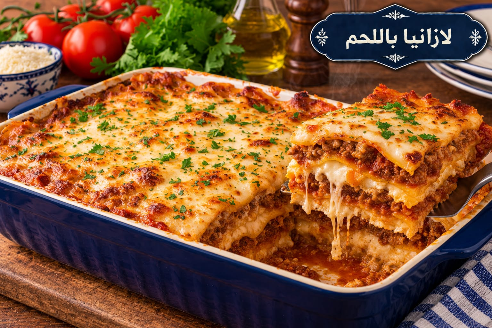

لازانيا باللحم
طبقات لحم وبشاميل وجبن

مقادير لازانيا باللحم
- 12 شريحة لازانيا
- 500 غ لحم مفروم
- 1 بصلة
- 2 كوب صلصة طماطم
- 1 ملعقة صغيرة ملح
- ½ ملعقة صغيرة فلفل أسود
- 3 أكواب حليب
- 3 ملاعق كبيرة زبدة
- 3 ملاعق كبيرة طحين
- 1½ كوب موزاريلا
طريقة عمل لازانيا باللحم
- حمري البصل واللحم ثم أضيفي صلصة الطماطم ونصف الملح والفلفل واتركيها 15 دقيقة.
- للبشاميل ذوبي الزبدة وأضيفي الطحين وقلبيه دقيقة ثم أضيفي الحليب تدريجيًا مع التحريك حتى يثخن.
- رتبي طبقات الصلصة واللازانيا والبشاميل وكرريها ثم غطي الوجه بالجبن.
- اخبزي على 190°م مدة 35–45 دقيقة وأريحيها 10 دقائق قبل التقطيع.